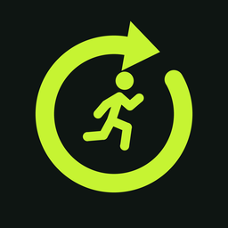
Run: Back in Shape
A gentle way back to running on the treadmill, for iPhone and Apple Watch.
Free. No account, no ads, no subscriptions.
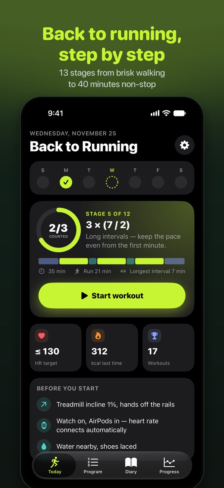
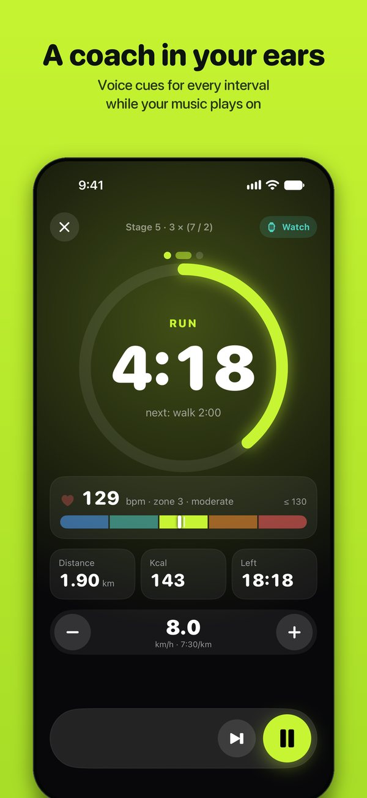
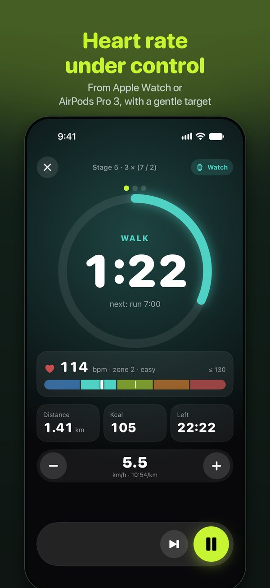
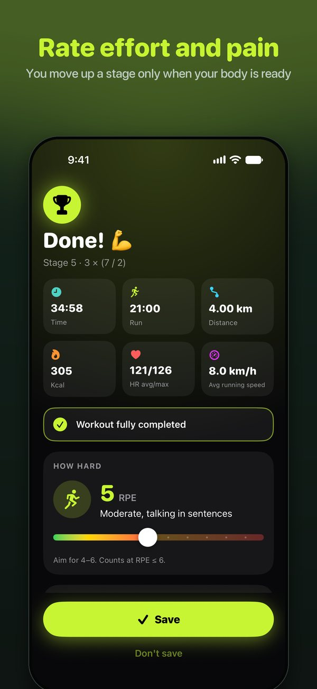
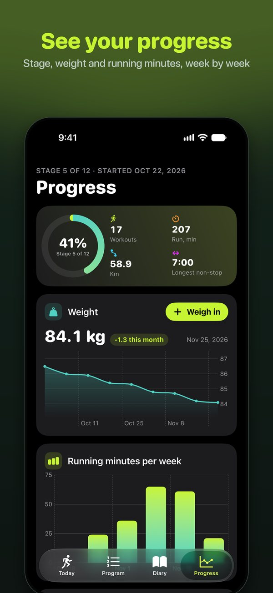
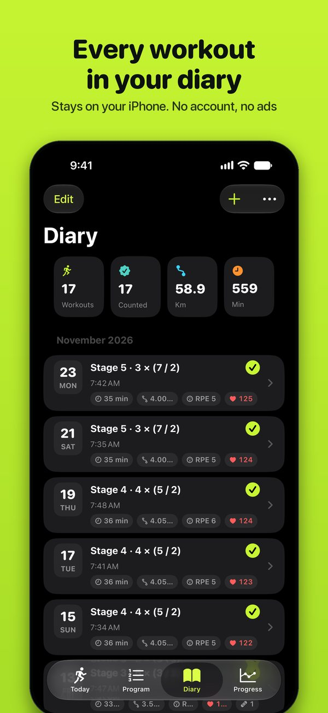
What it does
13 stages, no rush
From brisk walking to 40 minutes of continuous running. You move up after three sessions that went well, not by the calendar.
A coach in your ears
Voice cues for every interval, a countdown before each change and form tips on long runs. Your music only dips for a moment.
Heart rate under control
From Apple Watch or AirPods Pro 3. A gentle target keeps the pace conversational, with a clear warning if the pulse runs too high.
Listens to your body
A quick check before the start, effort and pain after the finish. A hard day means repeating the stage or stepping back: that is part of the plan.
Diary and progress
Every workout with pace, heart rate and how it felt. Charts of running minutes, weight and fitness trends.
On your wrist
Start from Apple Watch, with or without iPhone. Colorful complications and a Smart Stack card show the stage and the week.
How a workout goes
- Tell the app how you feel today.
- Step on the treadmill and press Start: warm-up, run and walk intervals, cool-down.
- Follow the voice; watch heart rate on the screen or on your wrist.
- Rate effort and pain. The app decides whether the session counts toward the next stage.
Private by design
Your diary stays on your iPhone and Apple Watch. Workouts and weight go to Apple Health with your permission. Nothing is sent to the developer.
Run: Back in Shape gives general training guidance and is not a medical device. Talk to a doctor before you start, especially after an injury or a long break.
Run: Back in Shape
Бережное возвращение к бегу на беговой дорожке для iPhone и Apple Watch.
Бесплатно. Без аккаунта, рекламы и подписок.
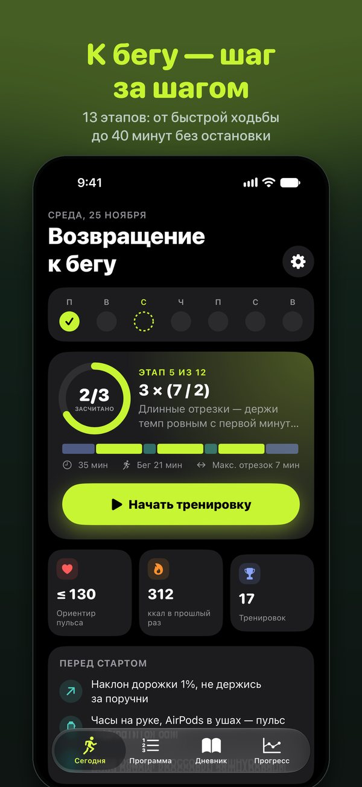
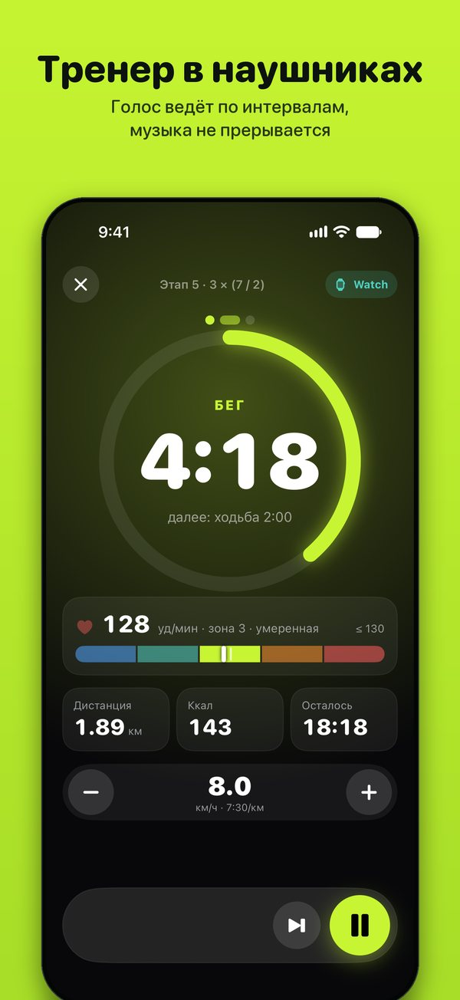
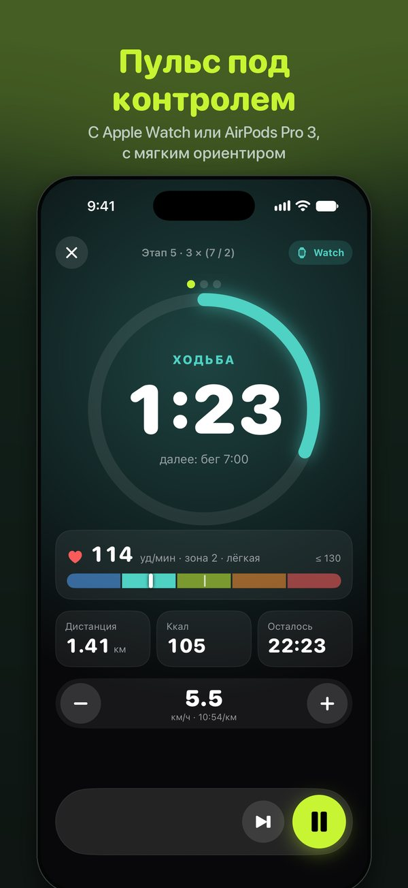
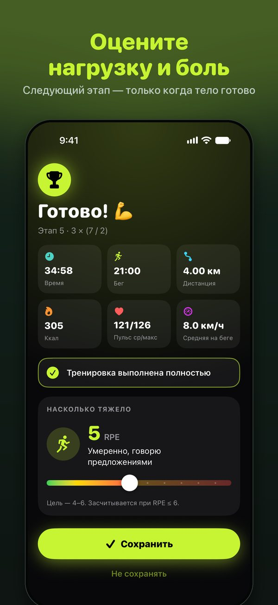
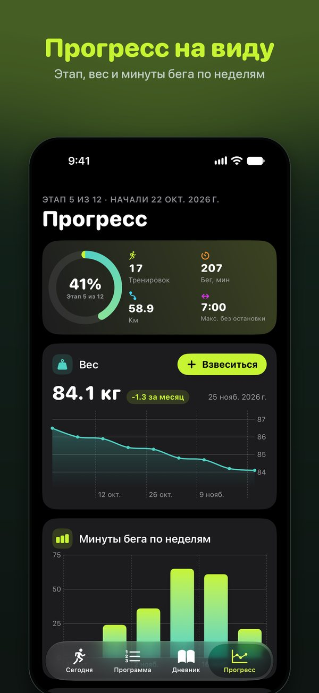
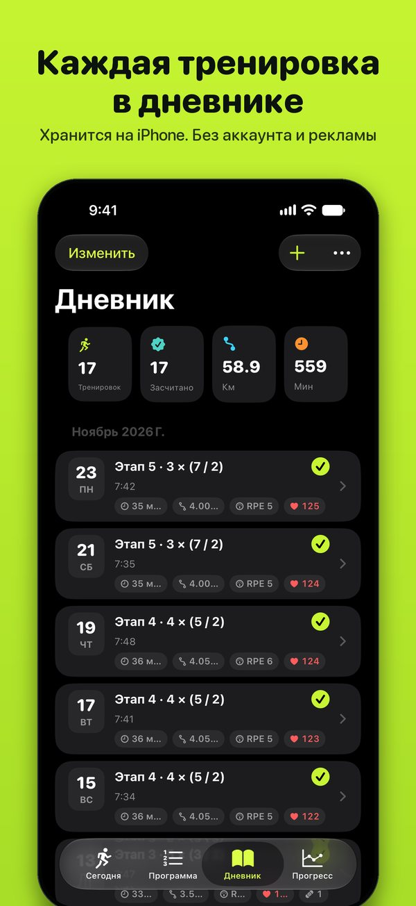
Что умеет приложение
13 этапов без спешки
От быстрой ходьбы до 40 минут непрерывного бега. Следующий этап — после трёх удачных тренировок, а не по календарю.
Тренер в наушниках
Голос ведёт по интервалам, отсчитывает секунды до смены и подсказывает технику на длинных отрезках. Музыка только приглушается на мгновение.
Пульс под контролем
С Apple Watch или AirPods Pro 3. Мягкий ориентир держит разговорный темп, а при слишком высоком пульсе приложение ясно предупредит.
Слушает ваше тело
Короткий опрос перед стартом, нагрузка и боль после финиша. Тяжёлый день — повтор этапа или шаг назад: это часть плана.
Дневник и прогресс
Каждая тренировка с темпом, пульсом и ощущениями. Графики минут бега, веса и роста формы.
На запястье
Старт с Apple Watch — с iPhone или без него. Цветные усложнения и карточка смарт-стопки показывают этап и неделю.
Как проходит тренировка
- Отметьте, как вы себя чувствуете сегодня.
- Встаньте на дорожку и нажмите «Старт»: разминка, интервалы бега и ходьбы, заминка.
- Следуйте голосу; пульс виден на экране и на часах.
- Оцените нагрузку и боль. Приложение решит, засчитать ли тренировку к следующему этапу.
Приватность
Дневник хранится на вашем iPhone и Apple Watch. Тренировки и вес с вашего разрешения записываются в «Здоровье». Разработчику ничего не передаётся.
Run: Back in Shape даёт общие рекомендации по тренировкам и не является медицинским изделием. Перед началом, особенно после травмы или долгого перерыва, посоветуйтесь с врачом.
Run: Back in Shape
דרך עדינה לחזור לרוץ על הליכון, ל־iPhone ול־Apple Watch.
חינם. בלי חשבון, בלי פרסומות ובלי מינויים.
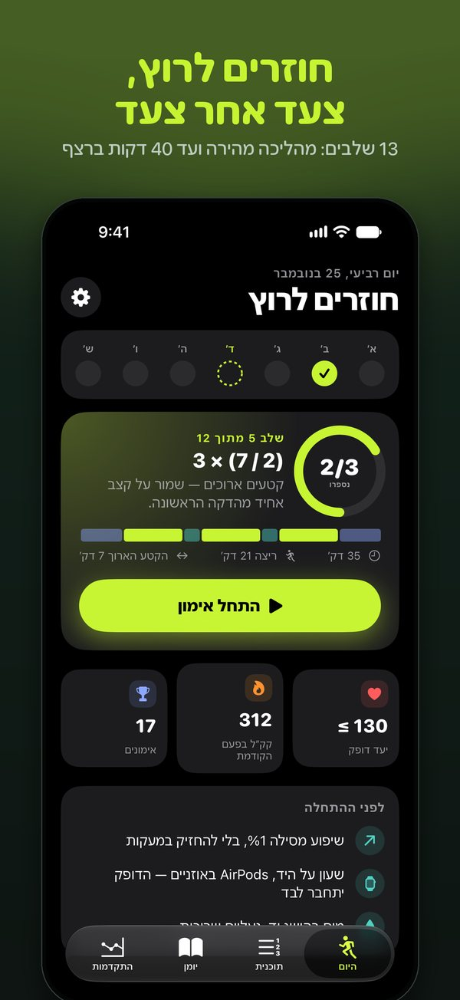
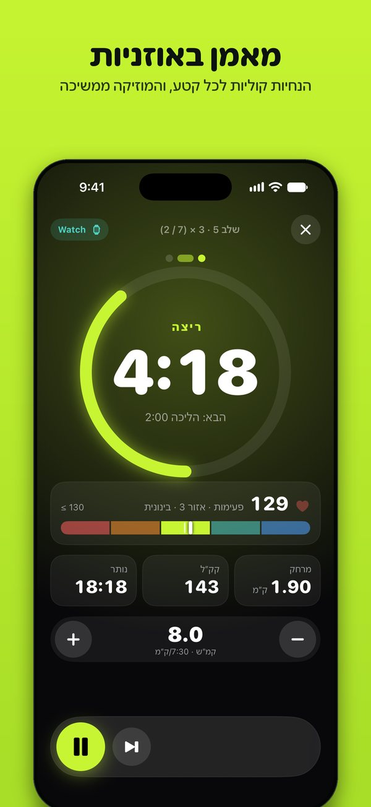
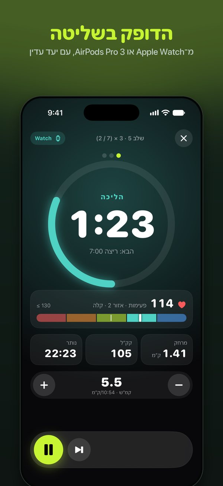
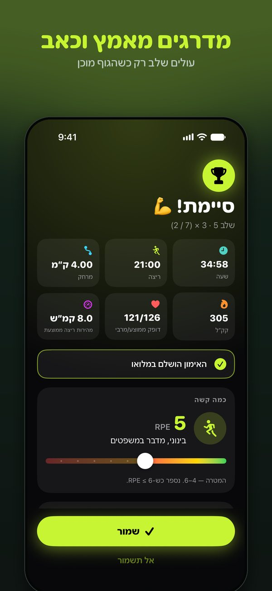
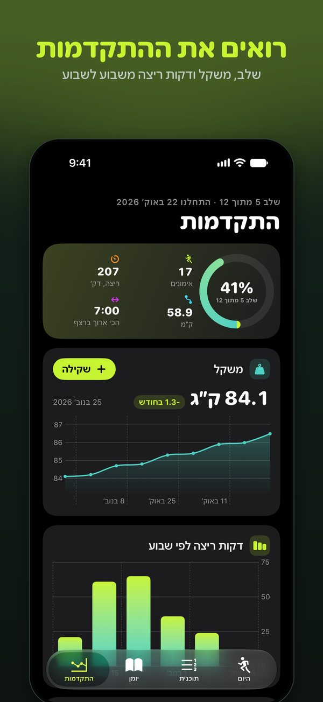
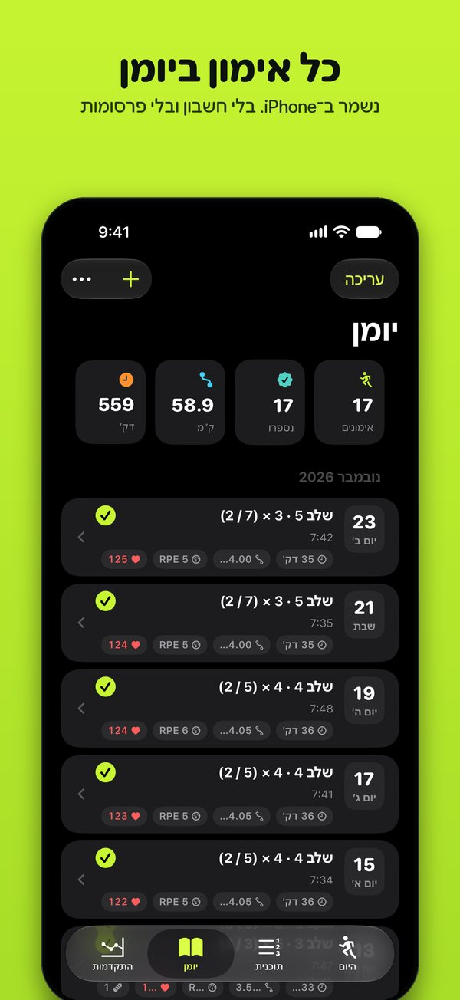
מה האפליקציה עושה
13 שלבים, בלי למהר
מהליכה מהירה ועד 40 דקות ריצה רצופה. עולים שלב אחרי שלושה אימונים מוצלחים, ולא לפי לוח השנה.
מאמן באוזניות
הנחיות קוליות לכל קטע, ספירה לאחור לפני כל מעבר וטיפים לטכניקה בריצות ארוכות. המוזיקה רק מונמכת לרגע.
הדופק בשליטה
מ־Apple Watch או מ־AirPods Pro 3. יעד עדין שומר על קצב שאפשר לדבר בו, עם אזהרה ברורה כשהדופק גבוה מדי.
מקשיבה לגוף
בדיקה קצרה לפני ההתחלה, מאמץ וכאב אחרי הסיום. יום קשה פירושו לחזור על השלב או לרדת שלב: זה חלק מהתוכנית.
יומן והתקדמות
כל אימון עם קצב, דופק והרגשה. גרפים של דקות ריצה, משקל ומגמות כושר.
על פרק היד
מתחילים מה־Apple Watch, עם ה־iPhone או בלעדיו. סיבוכים צבעוניים וכרטיס ב־Smart Stack מציגים את השלב ואת השבוע.
איך נראה אימון
- מסמנים איך מרגישים היום.
- עולים על ההליכון ולוחצים על ״התחל״: חימום, קטעי ריצה והליכה, שחרור.
- הולכים לפי הקול; הדופק מוצג על המסך ועל השעון.
- מדרגים מאמץ וכאב. האפליקציה מחליטה אם האימון נספר לקראת השלב הבא.
פרטיות
היומן נשמר ב־iPhone וב־Apple Watch שלכם. אימונים ומשקל נשמרים באפליקציית בריאות באישורכם. שום דבר לא נשלח למפתח.
Run: Back in Shape נותנת הנחיות אימון כלליות ואינה מכשיר רפואי. יש להתייעץ עם רופא לפני שמתחילים, במיוחד אחרי פציעה או הפסקה ארוכה.